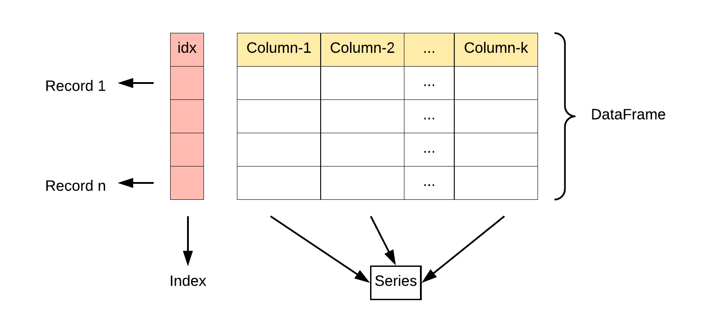
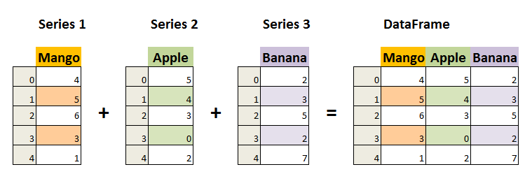
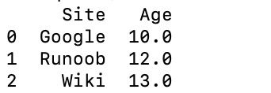
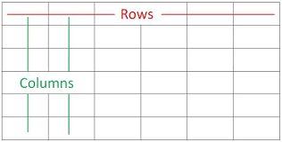

Pandas Data Structures - DataFrame
DataFrame is another core data structure in Pandas, similar to a two-dimensional table or a data table in a database.
DataFrame is a tabular data structure that contains a set of ordered columns, each of which can have different value types (numeric, string, boolean values).
DataFrame has both row indexes and column indexes; it can be seen as a dictionary composed of Series (sharing a common index).
DataFrame provides various functions for data access, filtering, splitting, merging, reshaping, aggregation, and transformation operations.
DataFrame is a very flexible and powerful data structure, widely used for tasks such as data analysis, cleaning, transformation, and visualization.
DataFrame Features:
Two-dimensional structure:
DataFrameIt is a two-dimensional table that can be viewed as an Excel spreadsheet or an SQL table, with rows and columns. It can be regarded as multipleSeriesobjects composed into a dictionary.Column data types:Different columns can contain different data types, such as integers, floats, strings, or Python objects.
-
Index：
DataFrameCan have row indexes and column indexes, similar to row numbers and column labels in Excel. -
Variable size: Can add and delete columns, similar to a dictionary in Python.
-
Automatic alignment: When performing arithmetic operations or data alignment operations,
DataFramethe indexes will be automatically aligned. -
Handling Missing Data：
DataFrameCan contain missing data, Pandas usesNaN(Not a Number) to represent it. -
Data Operations: Supports operations such as data slicing, indexing, and subset splitting.
-
Time Series Support：
DataFrameHas special support for time series data, allowing easy slicing, indexing, and manipulation of time-based data. -
Rich Data Access Functionality: Through the
.loc、.iloc和.query()method, you can flexibly access and filter data. -
Flexible Data Processing Functionality: Including data merging, reshaping, pivoting, grouping, and aggregation.
-
Data Visualization: Although
DataFrameitself is not a visualization tool, it can be combined with visualization libraries such as Matplotlib or Seaborn to perform data visualization. -
Efficient Data Input/Output: Can conveniently read and write data, supporting multiple formats such as CSV, Excel, SQL databases, and HDF5.
-
Descriptive Statistics: Provides a series of methods to compute descriptive statistics, such as
.describe()、.mean()、.sum()etc. -
Flexible Data Alignment and Integration: Can easily be combined with other
DataFrame或Seriesobjects to perform merging, joining, or updating operations. -
Transformation Functionality: Can transform values in the dataset, for example using the
.apply()method to apply custom functions. -
Rolling Window and Time Series Analysis: Supports rolling window statistics and time series analysis on datasets.


The DataFrame constructor is as follows:
pandas.DataFrame(data=None, index=None, columns=None, dtype=None, copy=False)
Parameter description:
data: The data part of the DataFrame, which can be a dictionary, two-dimensional array, Series, DataFrame, or other object that can be converted to a DataFrame. If this parameter is not provided, an empty DataFrame is created.index: The row index of the DataFrame, used to identify each row of data. It can be a list, array, index object, etc. If this parameter is not provided, a default integer index is created.columns: The column index of the DataFrame, used to identify each column of data. It can be a list, array, index object, etc. If this parameter is not provided, a default integer index is created.dtype: Specifies the data type of the DataFrame. It can be a NumPy data type, such asnp.int64、np.float64etc. If this parameter is not provided, the data type is inferred automatically based on the data.copy: Whether to copy data. The default is False, meaning data is not copied. If set to True, the input data is copied.
Pandas DataFrame is a two-dimensional array structure, similar to a two-dimensional array.
Example - Creating Using a List
data = [['Google', 10], ['Runoob', 12], ['Wiki', 13]]
# Create DataFrame
df = pd.DataFrame(data, columns=['Site', 'Age'])
# Use the astype method to set the data type of each column
df['Site'] = df['Site'].astype(str)
df['Age'] = df['Age'].astype(float)
print(df)
You can also use a dictionary to create one:
Example - Creating Using a Dictionary
data = {'Site':['Google', 'Runoob', 'Wiki'], 'Age':[10, 12, 13]}
df = pd.DataFrame(data)
print (df)
The output result is as follows:

The following example uses ndarrays to create. The lengths of the ndarrays must be the same. If an index is passed, the length of the index should equal the length of the arrays. If no index is passed, by default the index will be range(n), where n is the length of the arrays.
For ndarrays, you can refer to:NumPy Ndarray Object
Example - Creating Using ndarrays
import pandas as pd
# Create a two-dimensional ndarray containing website and age
ndarray_data = np.array([
['Google', 10],
['Runoob', 12],
['Wiki', 13]
])
# Use the DataFrame constructor to create a DataFrame
df = pd.DataFrame(ndarray_data, columns=['Site', 'Age'])
# Print the DataFrame
print(df)
The output result is as follows:
From the above output, we can see that the DataFrame data type is a table, containing rows and columns:

You can also use a dictionary (key/value), where the keys of the dictionary are the column names:
Example - Creating Using a Dictionary
data = [{'a': 1, 'b': 2},{'a': 5, 'b': 10, 'c': 20}]
df = pd.DataFrame(data)
print (df)
The output result is:
a b c 0 1 2 NaN 1 5 10 20.0
The part without corresponding data isNaN。
Pandas can use thelocattribute to return the data of a specified row. If no index is set, the first row index is0, the second row index is1, and so on:
Example
data = {
"calories": [420, 380, 390],
"duration": [50, 40, 45]
}
# Load data into a DataFrame object
df = pd.DataFrame(data)
# Return the first row
print(df.loc[0])
# Return the second row
print(df.loc[1])
The output result is as follows:
calories 420 duration 50 Name: 0, dtype: int64 calories 380 duration 40 Name: 1, dtype: int64
Note:The returned result is actually a Pandas Series data.
You can also return multiple rows of data, using the[[ ... ]]format, where...are the indexes of each row, separated by commas:
Example
data = {
"calories": [420, 380, 390],
"duration": [50, 40, 45]
}
# Load data into a DataFrame object
df = pd.DataFrame(data)
# Return the first and second rows
print(df.loc[[0, 1]])
The output result is:
calories duration 0 420 50 1 380 40
Note:The returned result is actually a Pandas DataFrame data.
We can specify the index values, as in the following example:
Example
data = {
"calories": [420, 380, 390],
"duration": [50, 40, 45]
}
df = pd.DataFrame(data, index = ["day1", "day2", "day3"])
print(df)
The output result is:
calories duration
day1 420 50
day2 380 40
day3 390 45
Pandas can use thelocattribute to return the row corresponding to the specified index:
Example
data = {
"calories": [420, 380, 390],
"duration": [50, 40, 45]
}
df = pd.DataFrame(data, index = ["day1", "day2", "day3"])
# Specify the index
print(df.loc["day2"])
The output result is:
calories 380 duration 40 Name: day2, dtype: int64
DataFrame Methods
The common operations and methods of DataFrame are shown in the following table:
| Method Name | Function Description |
|---|---|
head(n) | Return the first n rows of the DataFrame (default first 5 rows) |
tail(n) | Return the last n rows of the DataFrame (default last 5 rows) |
info() | Display brief information about the DataFrame, including column names, data types, number of non-null values, etc. |
describe() | Return statistical information for numeric columns of the DataFrame, such as mean, standard deviation, minimum, etc. |
shape | Return the number of rows and columns of the DataFrame (rows, columns) |
columns | Return all column names of the DataFrame |
index | Return the row index of the DataFrame |
dtypes | Return the data type of each column |
sort_values(by) | Sort by a specified column |
sort_index() | Sort by row index |
dropna() | Drop rows or columns containing missing values (NaN) |
fillna(value) | Fill missing values with a specified value |
isnull() | Check for missing values, returns a boolean DataFrame |
notnull() | Check for non-missing values, returns a boolean DataFrame |
loc[] | Select data by label index |
iloc[] | Select data by position index |
at[] | Access a single element in a DataFrame (moreloc[]efficient) |
iat[] | Access a single element in a DataFrame (moreiloc[]efficient) |
apply(func) | Apply a function to a DataFrame or Series |
applymap(func) | Apply a function to each element of a DataFrame (only for DataFrame) |
groupby(by) | Grouping operation, used to group by a column for summary statistics |
pivot_table() | Create a pivot table |
merge() | Merge multiple DataFrames (similar to SQL JOIN operation) |
concat() | Concatenate multiple DataFrames by rows or columns |
to_csv() | Export DataFrame to a CSV file |
to_excel() | Export DataFrame to an Excel file |
to_json() | Export DataFrame to JSON format |
to_sql() | Export DataFrame to a SQL database |
query() | Query DataFrame using SQL-style syntax |
duplicated() | Return a boolean DataFrame indicating whether each row is a duplicate |
drop_duplicates() | Drop duplicate rows |
set_index() | Set the index of the DataFrame |
reset_index() | Reset the index of the DataFrame |
transpose() | Transpose the DataFrame (swap rows and columns) |
Example
# Create DataFrame
data = {
'Name': ['Alice', 'Bob', 'Charlie', 'David'],
'Age': [25, 30, 35, 40],
'City': ['New York', 'Los Angeles', 'Chicago', 'Houston']
}
df = pd.DataFrame(data)
# View the first two rows of data
print(df.head(2))
# View basic information of the DataFrame
print(df.info())
# Get descriptive statistics
print(df.describe())
# Sort by age
df_sorted = df.sort_values(by='Age', ascending=False)
print(df_sorted)
# Select specified columns
print(df[['Name', 'Age']])
# Select rows by index
print(df.iloc[1:3]) # Select rows 2 to 3 (by position)
# Select rows by label
print(df.loc[1:2]) # Select rows 2 to 3 (by label)
# Compute group statistics (group by city, calculate average age)
print(df.groupby('City')['Age'].mean())
# Handle missing values (fill missing values)
df['Age'] = df['Age'].fillna(30)
# Export to CSV file
df.to_csv('output.csv', index=False)
The output is:
# 查看前两行数据
Name Age City
0 Alice 25 New York
1 Bob 30 Los Angeles
# 查看 DataFrame 的基本信息
<class 'pandas.core.frame.DataFrame'>
RangeIndex: 4 entries, 0 to 3
Data columns (total 3 columns):
# Column Non-Null Count Dtype
--- ------ -------------- -----
0 Name 4 non-null object
1 Age 4 non-null int64
2 City 4 non-null object
dtypes: int64(1), object(2)
memory usage: 148.0+ bytes
# 获取描述统计信息
Age
count 4.000000
mean 32.500000
std 6.454972
min 25.000000
25% 27.500000
50% 32.500000
75% 37.500000
max 40.000000
# 按年龄排序
Name Age City
3 David 40 Houston
2 Charlie 35 Chicago
1 Bob 30 Los Angeles
0 Alice 25 New York
# 按标签选择行
Name Age City
1 Bob 30 Los Angeles
2 Charlie 35 Chicago
# 计算分组统计（按城市分组，计算平均年龄）
City
Chicago 35.0
Houston 40.0
Los Angeles 30.0
New York 25.0
Name: Age, dtype: float64
More DataFrame Details
Creating a DataFrame
Create from dictionary:The keys of the dictionary become column names, and the values become column data.
Example
# Create DataFrame from a dictionary
df = pd.DataFrame({'Column1': [1, 2, 3], 'Column2': [4, 5, 6]})
Create from a list of lists:The outer list represents rows, and the inner lists represent columns.
# Create DataFrame from a list of listsExample
columns=['Column1', 'Column2', 'Column3'])
Create from a NumPy array:Provide a two-dimensional NumPy array.
Example
# Create DataFrame from a NumPy array
df = pd.DataFrame(np.array([[1, 2, 3], [4, 5, 6], [7, 8, 9]]))
Create a DataFrame from Series:Bypd.Series()create.
Example
s1 = pd.Series(['Alice', 'Bob', 'Charlie'])
s2 = pd.Series([25, 30, 35])
s3 = pd.Series(['New York', 'Los Angeles', 'Chicago'])
df = pd.DataFrame({'Name': s1, 'Age': s2, 'City': s3})
DataFrame Properties and Methods
DataFrame objects have many attributes and methods for data manipulation, indexing, and processing, such as: shape, columns, index, head(), tail(), info(), describe(), mean(), sum(), etc.
Example
print(df.shape) # Shape
print(df.columns) # Column names
print(df.index) # Index
print(df.head()) # First few rows of data, default is first 5 rows
print(df.tail()) # Last few rows of data, default is last 5 rows
print(df.info()) # Data information
print(df.describe())# Descriptive statistics
print(df.mean()) # Calculate mean
print(df.sum()) # Calculate sum
Accessing DataFrame Elements
Access columns:Use column names as attributes or via.loc[]、.iloc[]access, and you can also use label or positional indexing.
Example
print(df['Column1'])
# Access by attribute
print(df.Name)
# Access via .loc[]
print(df.loc[:, 'Column1'])
# Access via .iloc[]
print(df.iloc[:, 0]) # Assume 'Column1' is the first column
# Access a single element
print(df['Name'][0])
Access rows:Use row labels and.loc[]access.
Example
print(df.loc[0, 'Column1'])
Modifying a DataFrame
Modify column data:Assign values to columns directly.
df['Column1'] = [10, 11, 12]
Add a new column:Assign values to the new column.
df['NewColumn'] = [100, 200, 300]
Add a new row:Use the loc, append, or concat methods.
Example
df.loc[3] = [13, 14, 15, 16]
# Add a new row to the end using append
new_row = {'Column1': 13, 'Column2': 14, 'NewColumn': 16}
df = df.append(new_row, ignore_index=True)
Note:append()The method has been marked as deprecated in pandas version 1.4.0 and will be removed in future versions. The official recommendation is to useconcat()as an alternative method for data concatenation.
The concat() method is used to merge two or more DataFrames. When you want to add a row to another DataFrame, you can treat the new row as a new DataFrame and then use concat():
Example
new_row = pd.DataFrame([[4, 7]], columns=['A', 'B']) # Create a DataFrame containing only the new row
df = pd.concat([df, new_row], ignore_index=True) # Add the new row to the original DataFrame
print(df)
Deleting DataFrame Elements
Drop columns:Use the drop method.
df_dropped = df.drop('Column1', axis=1)
Drop rows:Also use the drop method.
df_dropped = df.drop(0) # 删除索引为 0 的行
DataFrame Statistical Analysis
Descriptive statistics:Use.describe()to view the statistical summary of numeric columns.
df.describe()
Calculate statistics:Use aggregate functions such as.sum()、.mean()、.max()etc.
df['Column1'].sum() df.mean()
DataFrame Indexing Operations
Reset index:Use.reset_index()。
df_reset = df.reset_index(drop=True)
Set index:Use.set_index()。
df_set = df.set_index('Column1')
DataFrame Boolean Indexing
Use boolean expressions: filter the DataFrame based on conditions.
df[df['Column1'] > 2]
DataFrame Data Types
View data types: usedtypesattribute.
df.dtypes
Convert data types:Useastypemethod.
df['Column1'] = df['Column1'].astype('float64')
DataFrame Merging and Splitting
Merge:Useconcat 或 mergemethod.
# 纵向合并 pd.concat([df1, df2], ignore_index=True) # 横向合并 pd.merge(df1, df2, on='Column1')
Split:Usepivot、meltor custom functions.
# 长格式转宽格式 df_pivot = df.pivot(index='Column1', columns='Column2', values='Column3') # 宽格式转长格式 df_melt = df.melt(id_vars='Column1', value_vars=['Column2', 'Column3'])
Indexing and Slicing
DataFrame supports indexing and slicing operations on rows and columns.
Example
print(df[['Name', 'Age']]) # Extract multiple columns
print(df[1:3]) # Slice rows
print(df.loc[:, 'Name']) # Extract a single column
print(df.loc[1:2, ['Name', 'Age']]) # Extract specified rows and columns by label indexing
print(df.iloc[:, 1:]) # Extract specified columns by positional indexing
Notes
DataFrameIt is a flexible data structure that can hold columns of different data types.- Column names and row indexes can be strings, integers, etc.
DataFrameData selection, filtering, modification, and analysis can be performed in many ways.- Through
DataFrameoperations, you can perform data cleaning, transformation, analysis, visualization, and more.
Hins
ray***u0220@gmail.com
The tutorial here doesn't cover how to extract several columns from a dataframe, so I'll add that.
When processing data, if there are many series and we only focus on certain specific columns, you can use this.
Assumption:
data = { "mango": [420, 380, 390], "apple": [50, 40, 45], "pear": [1, 2, 3], "banana": [23, 45,56] } df = pd.DataFrame(data)Suppose we only care about the data for apple and banana, we can use the following method:
Hins
ray***u0220@gmail.com
Zihe Jinxiao Chang Ruoyi
175***8964@qq.com
import pandas as pd # numpy data1 = {'C': ['Google', 'Runoob'], 'A': [10, 12], 'B': [93.5, 89]} df1 = pd.DataFrame(data1) print(df1) # dict data2 = [{'C': 'Google', 'A': 10, 'B': 93.5}, {'C': 'Runoob', 'A': 12, 'B': 89}] df2 = pd.DataFrame(data2) print(df2)Output:
C A B 0 Google 10 93.5 1 Runoob 12 89.0 C A B 0 Google 10 93.5 1 Runoob 12 89.0When creating with numpy or a dictionary, the output is in keyword order ('A'<'B'<'C'), not in the order they were written.
Zihe Jinxiao Chang Ruoyi
175***8964@qq.com
Snow Pear
xue***@upc.edu.cn
Let me add something: how to add a new column first. Add a new column named sum, which is the sum of each row.
data = { "mango": [420, 380, 390], "apple": [50, 40, 45], "pear": [1, 2, 3], "banana": [23, 45,56] } df = pd.DataFrame(data) df['sum']=df['mango']+df['apple']+df['pear']+df['banana']Or:
Both add a column of data.
Snow Pear
xue***@upc.edu.cn
epoch
287***8345@qq.com
Additionally, how to modify the values of specific rows in a column:
data = { "mango": [420, 380, 390], "apple": [50, 40, 45], "pear": [1, 2, 3], "banana": [23, 45,56], "type":['Truck','Van','Tram'] } df = pd.DataFrame(data) print(df) # 修改某一列特定几行元素的值 array = df.type.isin(['Truck','Van','Tram']) df.loc[array,'type'] = 'Car' print(df)Output:
epoch
287***8345@qq.com